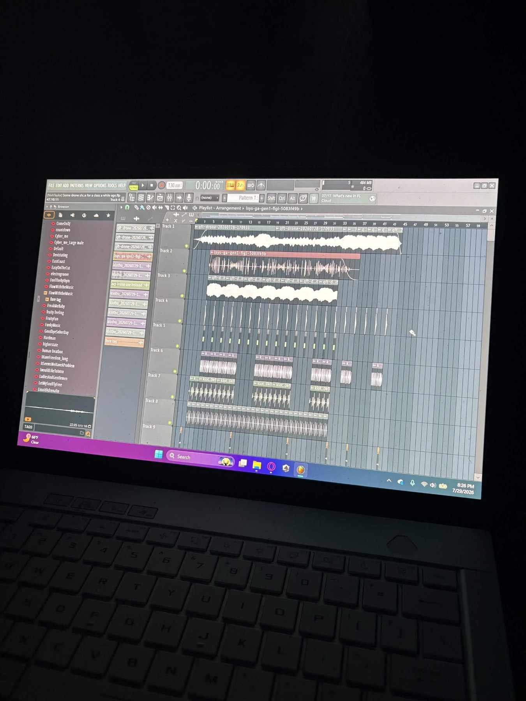
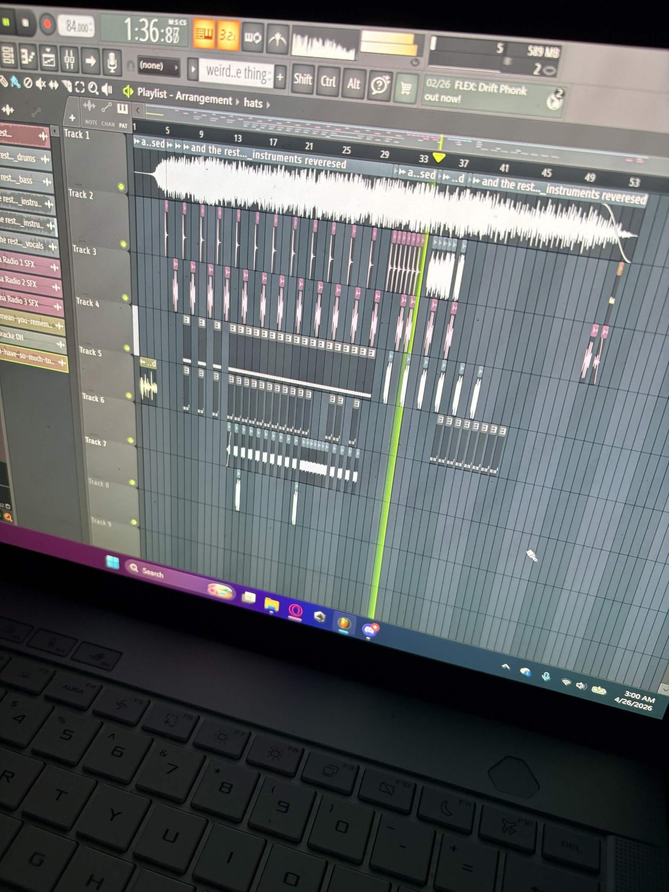
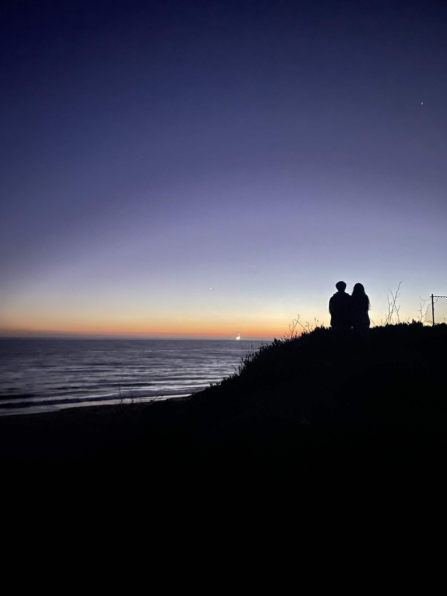
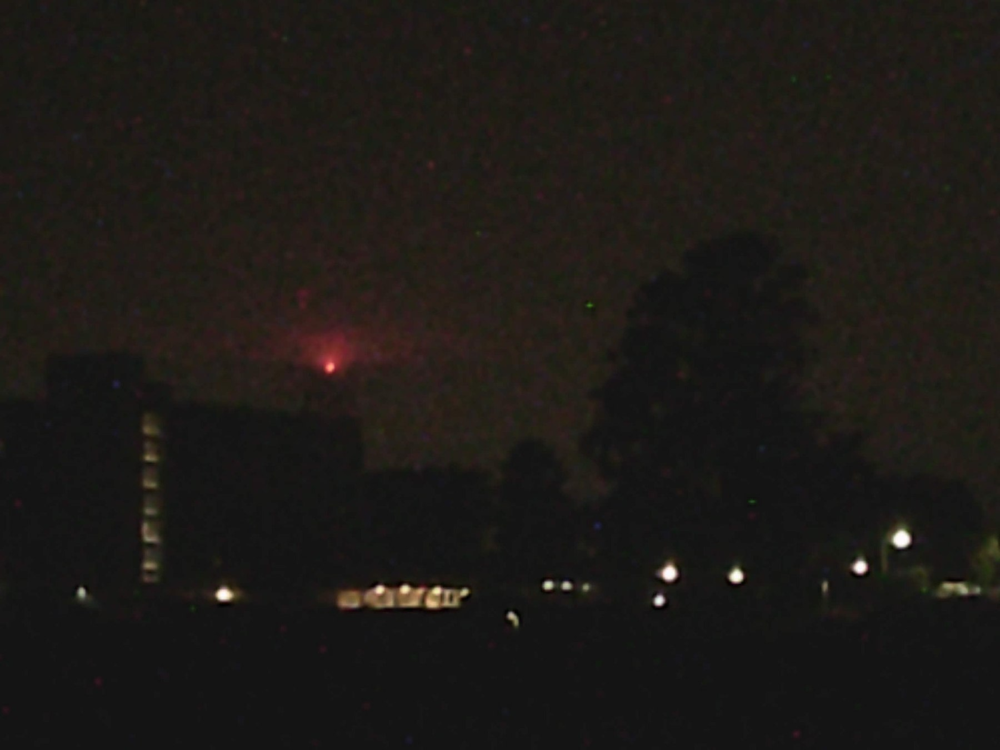
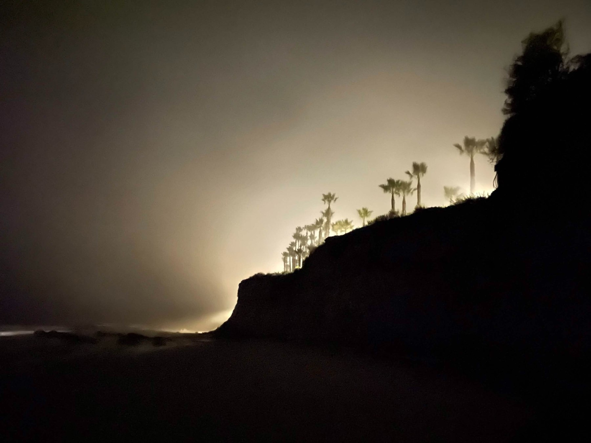
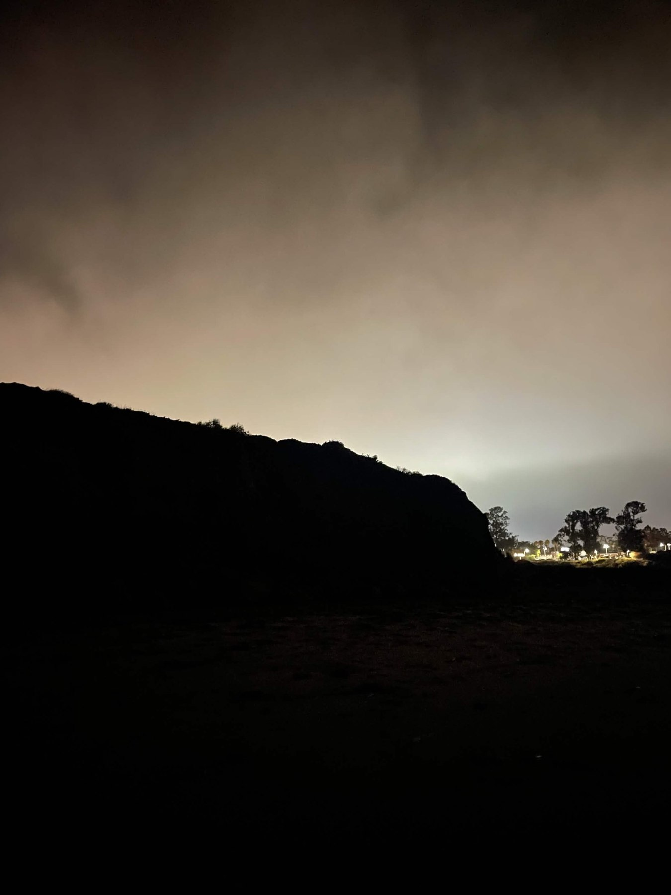
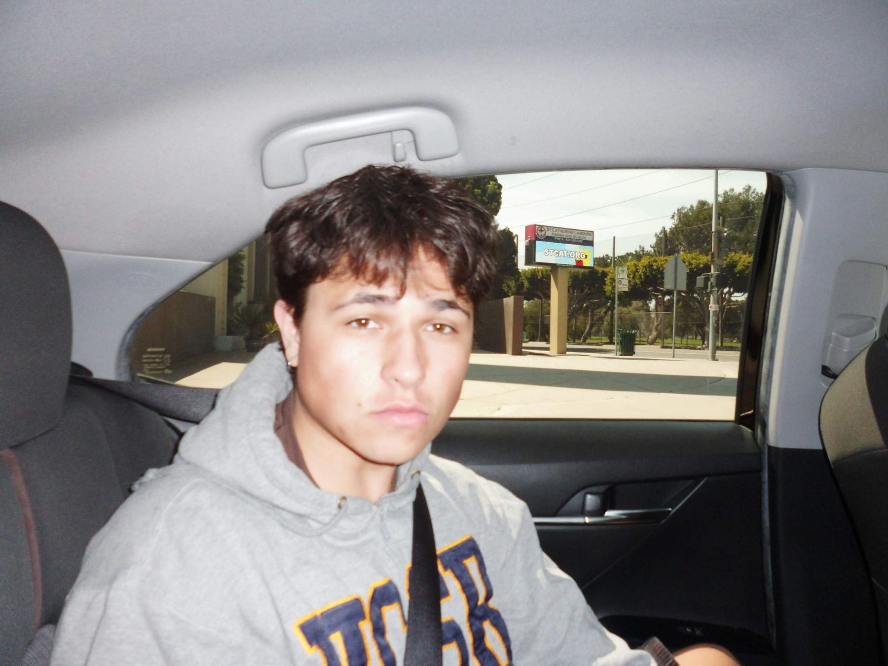
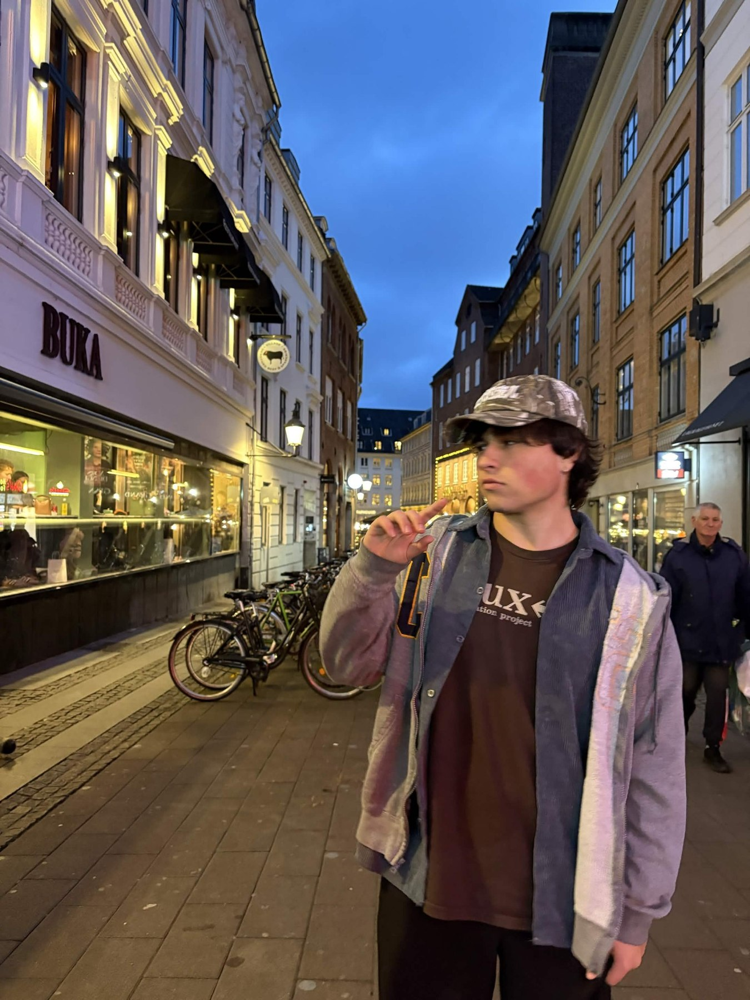
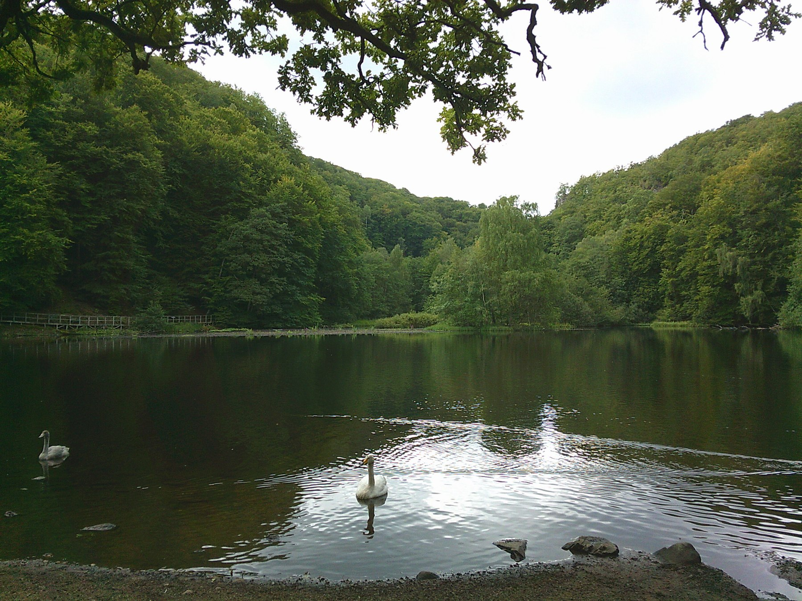

Archive / branching index
All projects.
The same tree, flattened into an archive: each medium forms a branch, and each project is one of its leaves.
Audio
02 leavesVideo
01 leafFuture growth
open branchReserved for the next medium the portfolio grows into. This branch can become photography, rendering, interactive work, or something else later.
Project / Audio
Fourth Ground
Description
This was the final project we made for MAT 111MC, which for me was a deep, dark production. All the sounds come from Ryan's sound library (klotho) that he made. Then, using Google Colab, we used those sounds and coded arrangements of those sounds, and did some mixing in the Colab Notebook itself. I used a synth that Ryan provided outside of the sound library, and with that, created the dark, low, spacey drone. Then I grabbed the sounds that I arranged in the Colab Notebook as samples, and then made the full piece in FL Studio. It is fully produced, engineered, mixed, and mastered by me. I took inspiration from other producers like Popilization, ssongbirdssing, orchead420, and it's a style of production I have never explored before, which is why I wanted to make it.
Process / below the surface
How it grew.
Images from the making of the project. The root system develops as you move farther into the process.

Project / Audio
I'll Call On Your Name
Description
This track is a purely instrumental track that I made in FL studio, arranged, engineered, mixed, and mastered by me. The main melody is a instrumental guitar from the song "and the rest..." by yoshi douglas, where it is reversed, different filters, which makes the original sample unrecognizable. This is my first fully produced song with a sampled element that persists through the song, and where I sample other movie vocals. The old TV sound effects that are scattered throughout give this beat a blippy, retro atmosphere.
Process / below the surface
How it grew.
Images from the making of the project. The root system develops as you move farther into the process.

Project / Video
Coward Music Video
Description
"Coward" is a song that I wrote the lyrics to, performed, mixed, and mastered by me in FL Studio. The guitar instrumental was made by a different producer. The song was made in a darker place for me, and the aesthetic I built for this is a representation of that. The music video consists of clips I took around the Isla Vista area because of how foggy the coast can get. I edited the video in Cap Cut. I made this solely for me; it means a lot to me and was very representative of my mental health and where I was in life. This song's alternate title was "Diary Entry Number 3" to illustrate the personal nature of this song.
Process / below the surface
How it grew.
Images from the making of the project. The root system develops as you move farther into the process.




About / the root
Foreground
A space for the person, practices, and ideas underneath the work.



My name is Nicholas Taylor and I am a producer and visual artist in Goleta, California.
I am currently an Applied Mathematics student at University of California, Santa Barbara, and I am minoring in Media Arts & Design.
Math, music, and nature all play such integral parts of my life, and my hope is you experience a little of all of it looking through here. Reach me at my email below.